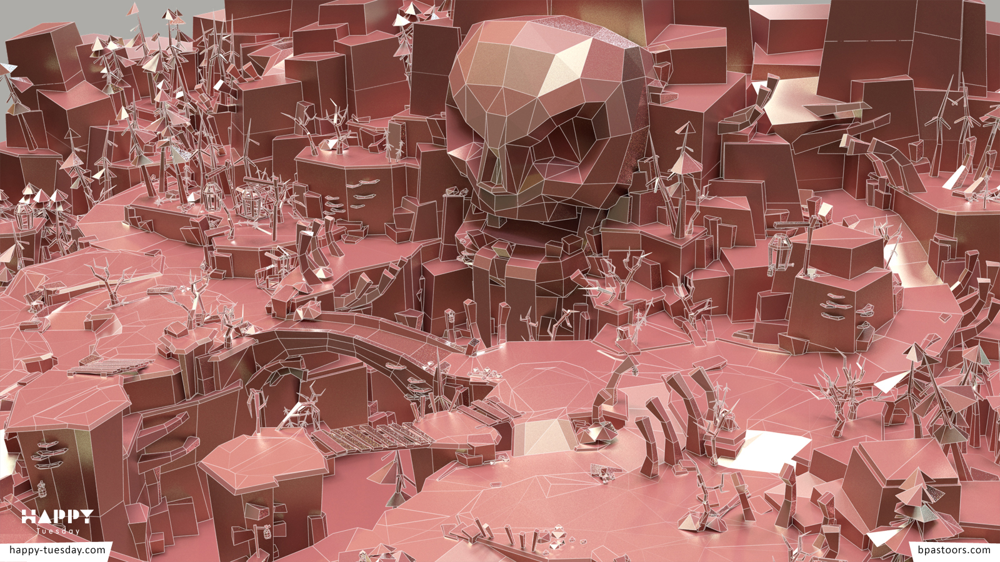
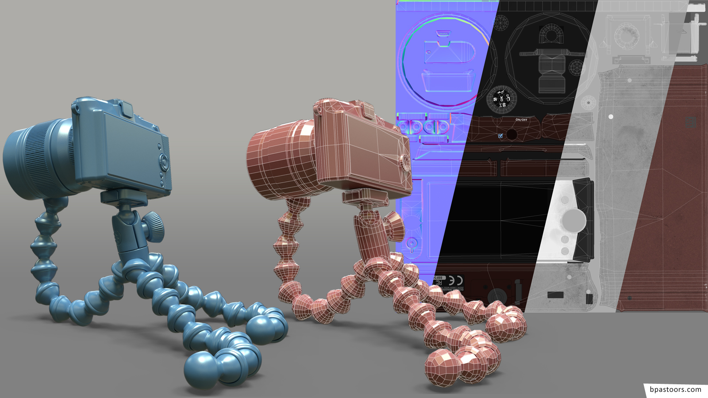

Pirate Prop - Personal Work
Based on concept art by Artyom Vlaskin.
Highpoly modeling in Modo, sculpting in zBrush. Retopo and baking in Modo. Texturing in Photoshop and Modo with additional normal-map work in Ndo.
Rendering and lighting in Marmoset Toolbag 2.
|
Haunted Island - Professional Work
Lowpoly modeling in Modo. Texturing in Photoshop and Modo. Lighting and lightmap baking in Modo.
Rendering in Unity with iPad 3 as target device.
Additional modeling, texturing and lighting by other Happy Tuesday Artists. Art Direction: Nils-Malte Carstens.
|
|

|
Gibson Les Paul Studio, Vox AC4TV mini and Neumann M149 - Personal Work
Based on photographic reference.
Highpoly modeling in Modo. Texturig and shading in Photoshop and Modo. Lighting and Rendering in Modo.
|
|
|
Olympus E-PM1 on Gorilla Pod - Personal Work
Based on photographic and real object reference.
Highpoly modeling in Modo. Rock sculpting in zBrush. Lowpoly modelig in Modo. Texturig and shading in Photoshop and Modo.
Rendering and lighting in Marmoset Toolbag 2.
|
|

|
Polo WRC 2015 - Professional Work
Based on Highpoly model by client and photographic reference.
Lowpoly modeling and baking in Modo. Texturing in Photoshop.
Rendering in Unity with iPad 3 as target device.
|
|

|